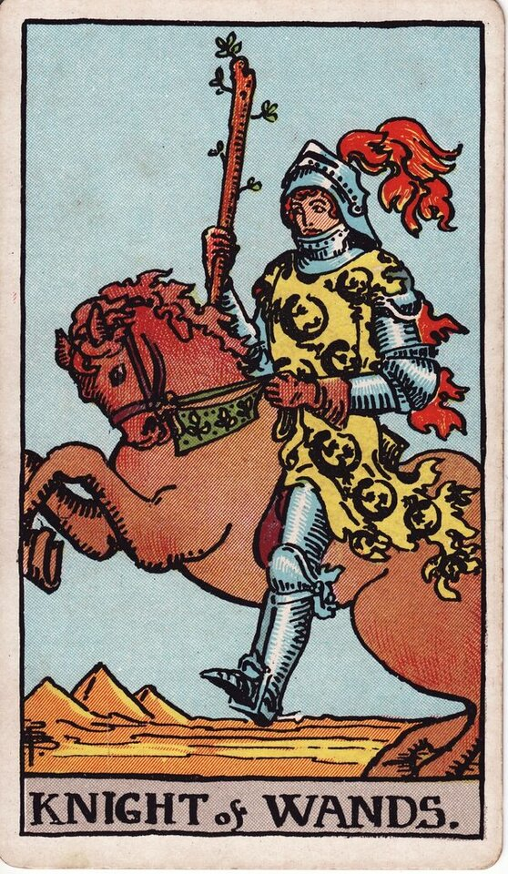

Minor Arcana · Suit of Wands
Knight of Wands Tarot Card Meaning
The Knight of Wands is passion at a gallop — bold, adventurous, all-in. Want to know what it means in your spread? Every reader on our line is hand-vetted — connect in under 60 seconds, $1 for your first minute, hang up anytime.
- Hand-vetted readers
- Available 24/7
- Hang up anytime

Knight of Wands — What It Shows
A knight in flame-patterned armour rears on a charging horse, wand raised, desert and pyramids behind him. Everything is forward motion and heat. The Knights are the "go and do" stage of each suit; the Knight of Wands does it fastest and most passionately — sometimes before he's thought it through. He's the embodiment of fire in pursuit.
Knight of Wands Upright Meaning
Upright, the Knight of Wands is bold action and adventure. You (or someone) are charging at a goal with confidence and charisma — taking the leap, making the grand gesture, chasing the exciting thing. It's magnetic, energising momentum, with a gentle warning to aim the energy rather than just unleash it.
Knight of Wands Reversed Meaning
Reversed, the horse bolts. Recklessness, impatience, hot-and-cold behaviour, big promises with no follow-through, or passion that flares and dies. It can mean acting before thinking, or someone who's all spark and no staying power.
Knight of Wands as a Person
As a person, the Knight of Wands is charismatic, adventurous, confident, and fun — the one who makes life exciting. The shadow side: unreliable, restless, or commitment-shy if immature. Often a passionate pursuer.
Knight of Wands as Feelings & in Love
As feelings, the Knight of Wands is intense, passionate attraction — they find you exciting and they want the chase. Strong heat, but watch for inconsistency. Example: a caller asked how someone felt after a whirlwind few weeks then silence; the Knight of Wands described genuine passion paired with a tendency to sprint then stall — real interest, unreliable pacing — so she could read the pattern instead of only the intensity.
Knight of Wands in Career & Money
For work it's bold moves and fast action — launching, pitching, taking a daring opportunity. Example: someone debating a risky career jump pulled this card; the message encouraged the leap while flagging the Knight's blind spot: have just enough plan that the boldness doesn't burn out on impact.
Knight of Wands as Advice
As advice: be bold and move — but point the energy. Channel the passion toward one target instead of scattering it, and pair the gallop with a little direction.
What People Ask About the Knight of Wands
Common questions readers hear about this card:
"Knight of Wands as feelings — is it strong?"
Yes, intense and passionate — but check for hot-and-cold consistency.
"Does it mean they'll commit?"
Not inherently — it's pursuit energy; commitment depends on maturity and other cards.
"Is it a travel card?"
It can be — relocation, trips, or a fast-moving change of scene.
"Reversed — are they playing games?"
Possibly hot-and-cold or impulsive rather than calculated; context matters.
Knight of Wands — Yes or No?
Upright: a yes with momentum, especially for bold action. Reversed leans no, or "not reliably."
Knight of Wands Reversed in Love & Career
Reversed, the Knight of Wands is worth unpacking by area. In love, it's the classic hot-and-cold partner: intense pursuit followed by sudden distance, big promises with no follow-through, or someone in love with the chase more than with you. It's rarely calculated cruelty — more often impulsive, commitment-shy fire that flares and stalls. In career, reversed it's recklessness, starting bold then abandoning, scattering energy across too much, or acting before thinking and creating a mess. The reversed Knight's theme is unreliable momentum. A live reader can help you read the pattern instead of only the intensity — and decide whether to wait it out or step back.
Knight of Wands Timing in a Reading
Timing is the least precise thing tarot does, so read this as a lean rather than a date. The Knight of Wands is fast but inconsistent — things move within days, then may stall and surge again. It often signals travel, relocation, or a fast-moving pursuit rather than a steady timeline. Reversed, expect stop-start delays and unreliability. A live reader reads pace from the surrounding cards and your question, which beats a card-only estimate.
Knight of Wands Card Combinations
Context changes everything — a few pairings readers see often:
Knight of Wands + Eight of Wands
Rapid pursuit, travel, or a relationship moving very fast.
Knight of Wands + The Tower
Reckless action causing a sudden blow-up.
Knight of Wands + King of Wands
Impulsive fire maturing into directed, committed leadership.
Knight of Wands in a Tarot Reading
A meanings page is the map; a live reading is the territory. The Knight of Wands shifts with its position and the cards around it — which is what a hand-vetted reader interprets for your question. See the full Suit of Wands, all 56 cards on the Minor Arcana hub, or start a phone tarot reading.
← Page of Wands · Next: Queen of Wands →
What Does the Knight of Wands Mean for You?
A meanings list is the map; a live reading is the territory. We'll connect you with the right hand-vetted tarot reader in under 60 seconds. $1/min first call · 15 minutes for $10 · hang up anytime · 100% satisfaction promise.
Call (888) 920-6662 NowKnight of Wands — Frequently Asked Questions
What does the Knight of Wands mean?
Passion in motion — bold action, adventure, and charging after what you want.
What does it mean reversed?
Recklessness, hot-and-cold behaviour, impatience, or burnout.
What does it mean as feelings?
Intense, passionate attraction and excitement — strong but possibly inconsistent.
What does it mean as a person?
Charismatic, adventurous, confident — fun and magnetic, sometimes unreliable.
How much does a reading cost?
First-time callers pay $1/min, or 15 minutes for $10, and you can hang up anytime.
Get Your Tarot Reading Now
Connected to a hand-vetted reader in under 60 seconds, the cards pulled on your real question, and you hang up with clarity.
Call (888) 920-6662